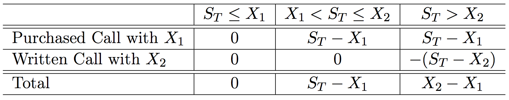

Options
Options are contracts that give the option to buy or sell an asset on or before a specific date at a specific price.
- A call option is an option to buy.
- A put option is an option to sell.
- A European option can only be exercised at maturity.
- An American option can be exercised any time prior to maturity.
Terminology
- Underlying asset: The asset that may be bought or sold when the option is exercised.
- Maturity (exercise) date: The date at which the contract expires.
- Strike (exercise) price: The pre-specified price at which the underlying can be bought or sold.
Underlying Assets
Common underlying assets include:
- Common stock.
- Foreign currency.
- Stock indices.
- Volatility indices.
- Futures contracts.
Options are written on many other underlying assets.
Options Exchanges
Many options are exchange traded.
- Chicago Board Options Exchange (CBOE).
- BATS.
- NYSE MKT (formerly American Stock Exchange, or AMEX).
Exchange-Traded Options
Exchanges serve to standardize contracts on popular options.
- Expiration dates.
- Strike prices.
- Class - call or put.
- American or European.
- Size of options contract.
- Size of underlying.
- Margin requirements.
VIX Options Specs

Implications of Options
The buyer of a call (put) option is not obligated to buy (sell) the underlying asset at the strike price.
- The buyer has the option to buy (sell).
- The seller of the call (put) option is obligated to sell (buy) the underlying if the buyer wants to exercise the option.
- If the price of the underlying asset is above (below) the strike price on the maturity date, the buyer will exercise. Why?
- If the price of the underlying asset is below (above) the strike price on the maturity date, the buyer will not exercise. Why?
Options as Insurance
Options have no downside risk for the buyer.
- The buyer of a call (put) is better off if the underlying asset price rises (falls).
- If the underlying asset price falls (rises), the buyer doesn’t lose anything.
Obligation of Sellers
However, the seller of an option only faces downside risk.
- The seller of a call (put) is worse off if the underlying asset price rises (falls).
- If the underlying asset price falls (rises), the seller doesn’t gain anything.
The seller must be compensated for taking the risk of having to sell (buy) the underlying for a low (high) price.
- The buyer pays a premium to purchase the option contract.
Call Option Example
On March 8th 2013, stock for Chipotle Mexican Grill (CMG) sold for \(\smash{\$321.84}\) and an option contract with a strike price of \(\smash{\$320.00}\) and maturity date of March 15th 2013 cost \(\smash{\$5.30}\).
- If the price of Chipotle is less than \(\smash{\$320.00}\) on March 15th, the option will not be exercised.
- If the price is \(\smash{\$325.00}\) on March 15th, the option holder (buyer) will exercise the contract.
- The gain to the buyer will be \(\smash{\$5.00}\).
Call Option Example
- Remember that the contract cost \(\smash{\$5.30}\), so the buyer has a net loss of \(\smash{\$0.30}\).
- If the price on March 15th is greater than \(\smash{\$325.30}\), the buyer will have a net gain.
Put Option Example
Consider again Chipotle stock which sold for \(\smash{\$321.84}\) on March 8th 2013.
- A put option with a strike price of \(\smash{\$320.00}\) and a maturity date of March 15th 2013 costs \(\smash{\$3.30}\).
- If the price of the stock is above \(\smash{\$320.00}\) on March 15th, the option will not be exercised.
Put Option Example
- Suppose the price is below \(\smash{\$320.00}\) on March 15th: \(\smash{\$315.00}\).
- The buyer of the put will exercise the contract, buying the stock for \(\smash{\$315.00}\) on the market and selling to the put writer for \(\smash{\$320.00}\).
- The gross profit would be \(\smash{\$320.00}\) - \(\smash{\$315.00}\) = \(\smash{\$5.00}\).
- The net profit would be: \(\smash{\$5.00}\) - \(\smash{\$3.30}\).
Moneyness
An option is
- In the money when its strike price would produce profits for the holder.
- Out of the money when exercise would be unprofitable.
- At the money when the strike price is equal to the asset price.
The moneyness can be determined at any time, as if the option were exercised at that instant.
Notation
We use the following notation:
\[\begin{split}\begin{align}
T & = \text{Maturity date} \\
S_t & = \text{Underlying asset price at time } t \\
X & = \text{Strike Price} \\
C_t & = \text{Value of a call option at time } t \\
P_t & = \text{Value of a put option at time } t.
\end{align}\end{split}\]
Call Option Payoff (Buyer)
The payoff to a call option holder (buyer) at expiration is
\[\begin{split}C_T = \begin{cases} S_T - X & \text{if } S_T > X \\ 0 &
\text{if } S_T \leq X. \end{cases}\end{split}\]
- If the asset price is above the strike, the holder can buy the underlying for \(\smash{X}\) and immediately sell it for \(\smash{S_T}\), yielding a profit of \(\smash{S_T-X}\).
- If the asset price is below the strike, the option is worthless.
Call Option Payoff (Buyer)
The payoffs above did not account for the cost of the option.
- If the option is purchased at time \(\smash{t}\) for a price of \(\smash{C_t}\), the net payoff to the holder at expiration is
\[\begin{split}C_T = \begin{cases} S_T - X - C_t, & \text{if } S_T > X \\ -C_t, &
\text{if } S_T \leq X. \end{cases}\end{split}\]
Call Option Payoff (Buyer)

Call Option Payoff (Seller)
On the flip side, the gross payoff to the call option writer at expiration is
\[\begin{split}\begin{align}
C_T & = \begin{cases} X - S_T, & \text{if } S_T > X
\\ 0, & \text{if } S_T \leq X. \end{cases}
\end{align}\end{split}\]
The net payoff is
\[\begin{split}\begin{align}
C_T & = \begin{cases} X - S_T + C_t, & \text{if } S_T > X
\\ C_t, & \text{if } S_T \leq X. \end{cases}
\end{align}\end{split}\]
Call Option Payoff (Seller)

Put Option Payoff (Buyer)
The gross payoff to put option holders at expiration is
\[\begin{split}\begin{align}
P_T & = \begin{cases} 0, & \text{if } S_T > X
\\ X - S_T, & \text{if } S_T \leq X. \end{cases}
\end{align}\end{split}\]
- If the underlying asset price is below the strike, the holder can purchase it for \(\smash{S_T}\) and immediately resell for \(\smash{X}\), yielding a profit of \(\smash{X-S_T}\).
- If the asset price is above the strike at expiration, the option is worthless.
Put Option Payoff (Buyer)
The net payoff to put option holders is
\[\begin{split}\begin{align}
P_T & = \begin{cases} -P_t, & \text{if } S_T > X
\\ X - S_T - P_t, & \text{if } S_T \leq X. \end{cases}
\end{align}\end{split}\]
Put Option Payoff (Buyer)

Speculation and Hedging
Options can be used for both speculation and hedging.
- Suppose you have \(\smash{\$10,000}\) available for investment.
- A share of stock costs \(\smash{\$100}\).
- An option with a strike price of \(\smash{\$100}\) and six-month maturity costs \(\smash{\$10}\).
- You can lend money (purchase the risk-free asset) at a rate of 3% for the next six months.
Speculation and Hedging
Consider three strategies.
- Strategy A: Invest entirely in stock, buying 100 shares at the current price of \(\smash{\$100}\).
- Strategy B: Invest entirely in at-the-money options, buying 10 call contracts (each for 100 shares) selling for \(\smash{\$1000}\) a piece.
- Strategy C: Purchase 100 call options (1 contract) for \(\smash{\$1,000}\) and invest the remaining \(\smash{\$9,000}\) in the risk-free asset, which will yield a total of \(\smash{\$9,000\times1.03 = \$9,270}\) at the end of the six months.
Speculation and Hedging
The values of the three strategies are:

Speculation and Hedging
The returns to the three strategies are:

Speculation and Hedging
From these tables we see two features of options.
- Options offer leverage.
- For the all-option portfolio, the return plummets to -100% when the stock price is below the strike.
- The return rockets to numbers that are much greater than simply holding the stock when the stock price increases above the strike.
Speculation and Hedging
- Options offer insurance.
- The mixed portfolio has limited downside loss: the investor can’t lose more than -7.3%.
- It also has limited upside gains: if the stock price is above the strike, its returns are always below the portfolio comprised of only stock.
Speculation and Hedging
\(\qquad\)

Protective Put
A protective put strategy consists of simultaneously purchasing a share of stock and a put option on that stock.
- This limits the potential downside loss of the stock while leaving the potential gains intact.
Protective Put
The put acts as insurance against loss.
- Comparing the net payoff of the protective put with the strategy of holding stock alone shows that the former comes at a cost.
- This is the insurance premium.
Protective Put

Protective Put

Covered Call
A covered call strategy consists of simultaneously purchasing a share of stock and writing a call option on that stock.
- It doesn’t eliminate downside loss (like the protective put).
- It covers the obligation to deliver the stock for less than its market value if the stock price is above the strike.
- The call writer is charging a premium (the call price) in order to forsake the upside gain of holding the stock.
Covered Call

Covered Call
{kind=link}
Straddle
A straddle consists of purchasing call and put options for the same asset and strike price.
- It is a bet on volatility.
- The straddle holder will earn (gross) positive returns if the stock price moves up or down, but nothing if it remains at the strike.
Straddle

Straddle
So why doesn’t everyone hold straddles?
- Because the investor must pay for both contracts.
- The investor doesn’t earn a net return unless the stock price moves enough to compensate for the initial outlay.
Straddle
{kind=link}
Spread
A spread is a combination of two or more options (both calls or both puts) on the same stock with different strikes.
- Some of the options are purchased while others are sold.
- A money spread is the simultaneous purchase and sale of options with different strikes.
- A time spread is the simultaneous purchase and sale of options with different maturities.
Bullish Spread
A bullish spread:
Bullish Spread
{kind=link}
Collar
An example of a collar is the purchase of a protective put for one strike price and the sale of a call option, on the same stock, for a higher strike.
- This strategy eliminates downside losses below the strike of the put and also upside gains beyond the strike of the call.
- In this case, the investor constrains gains and losses within a region close to the current price of the stock.
Protective Put Alternative
A protective put eliminates the downside loss of holding stock. We could achieve this with an alternative strategy.
- Purchase a call option with strike price \(\smash{X}\).
- Purchase a T-bill (lend at the risk-free rate) with a face value equal to the call strike price, \(\smash{X}\), and the same maturity date as the call.
Protective Put Alternative

Put Call Parity
The payoffs in the previous table are identical to those for the protective put.
- Hence, the cost of the protective put strategy should be equal to the cost of the call plus bonds strategy (why?!!!).
- This fact is known as the Put-Call Parity Relationship.
- Mathematically, it can be expressed as:
\[\begin{align}
C_0 + X e^{-r_f T} & = S_0 + P_0.
\end{align}\]
- This relationship is very useful because it allows us to compute the value of a call option if we know the price of the corresponding put, and vice versa.
Put Call Parity Example
Assume
- An asset currently sells for \(\smash{\$110}\).
- A call option with strike \(\smash{X = \$105}\) and 1-year maturity sells for \(\smash{\$17}\).
- A put option with strike \(\smash{X = \$105}\) and 1-year maturity sells for \(\smash{\$5}\).
- The continuously-compounded risk-free interest rate is \(\smash{4.879\%}\) per year.
- Does the parity relationship hold?
Put Call Parity Example
\[\begin{align}
C_0 + X e^{r_f} & \stackrel{?}{=} S_0 + P_0.
\end{align}\]
\[\begin{align}
\$117 = \$17 + \$105 e^{-0.04879} & \neq \$110 + \$5 = \$115.
\end{align}\]
- The relationship doesn’t hold.
- How might an investor take advantage of the situation?
Put Call Parity Example